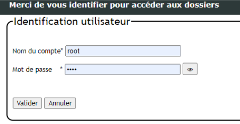
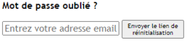
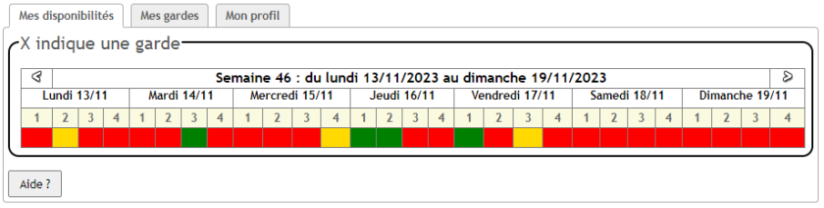
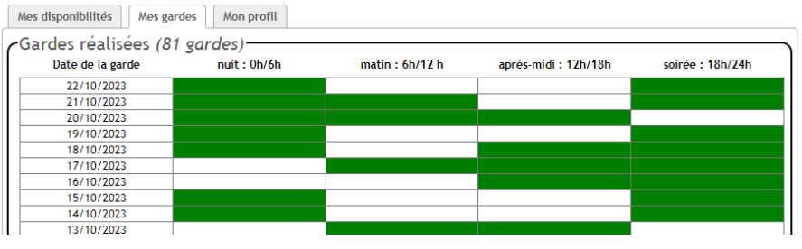
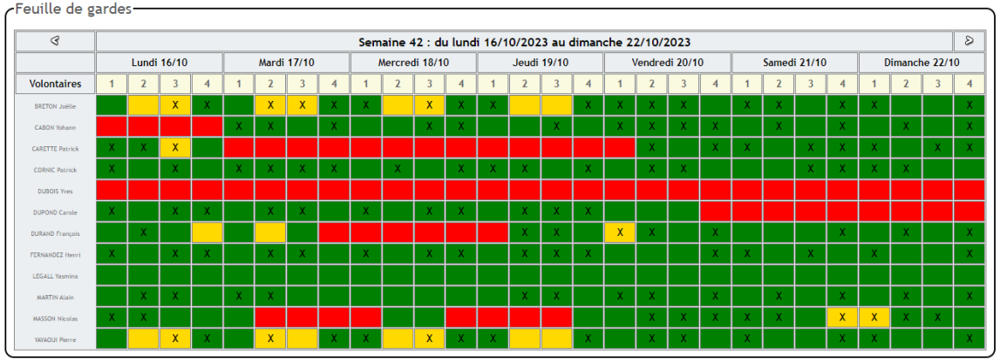
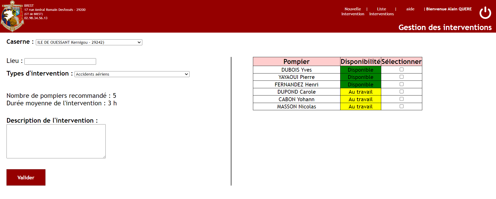
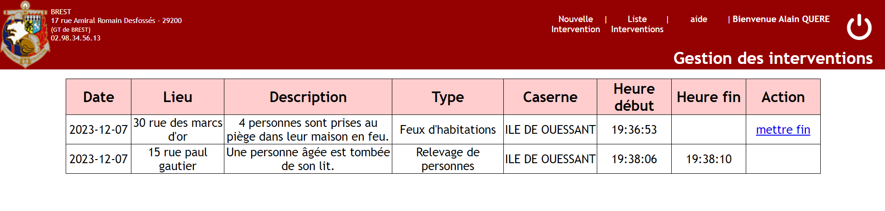
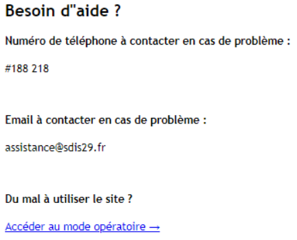

SDIS29 et ses besoins informatiques pour gérer les pompiers volontaires
Contexte : le SDIS 29 du Finistère entreprend une modernisation de ses outils informatiques et souhaite améliorer sa gestion des pompiers volontaires grâce à une nouvelle application intranet.
Contraintes
- Utilisation de l'application dans un navigateur, développer l'application en Php
Réalisations
- Maquettes, arborescence du site et diagramme de cas d'utilisation
- Modèle relationnel
- Développement de l'application en MVC
- Mode opératoire pour les utilisateurs
Fonctionnalités
- Système de connexion sécurisé, accès et modification du profil par le chef de garde ou le pompier lui-même
- Ajout des disponibilités par les pompiers volontaires, ajout des gardes par le chef de centre
- Créer des interventions
Outils et logiciels utilisés : HTML, CSS, PHP, Sql,Mysql, JS
Compétences travaillées :

Depuis l'onglet “Mes gardes” vous pouvez voir vos gardes pour la semaine actuelle et les semaines à venir

Entrez votre mot de passe pour recevoir un mail de réinitialisation
Si vous vous souvenez de votre mot de passe, cliquez sur "Connectez vous"

Via le menu d'accueil, dans l'onglet “Mes disponibilités”, vous avez accès à
vos disponibilités de toutes les semaines.
De base c'est la semaine suivante qui est affichée en premier (pour choisir ses disponibilités
futures)
Vous pouvez changer d'état de la tranche d'heure en cliquant dessus.
Chaque couleur correspond à un état de disponibilité (vert = disponible, orange = au travail, rouge
= indisponible)

Depuis l'onglet “Mes gardes” vous pouvez voir vos gardes pour la semaine actuelle et les semaines à venir

Attribution des gardes des pompiers, au clique cela coche ou décoche la case.
Si la case est cochée, alors le pompier sera de garde à la tranche d'heure sélectionnée

Création d'une intervention en sélectionnant la caserne la plus proche, en renseignant le lieu, le
type d'intervention et sa description.
Des informations sur le type d'intervention sélectionné est affiché.
Liste des pompiers disponible ou au travail qui peuvent être mit en intervention

Liste des interventions, avec la possibilité de mettre fin à l'intervention à tout moment
Depuis l'onglet “Mon profil”, vous avez accès à vos informations personnelles.
Les informations peuvent être modifiées en cliquant sur ce bouton : 

Accessible via le bouton “aide”
Permet d'accéder au mode opératoire du site internet, et à un numéro d'aide, ainsi qu'un email